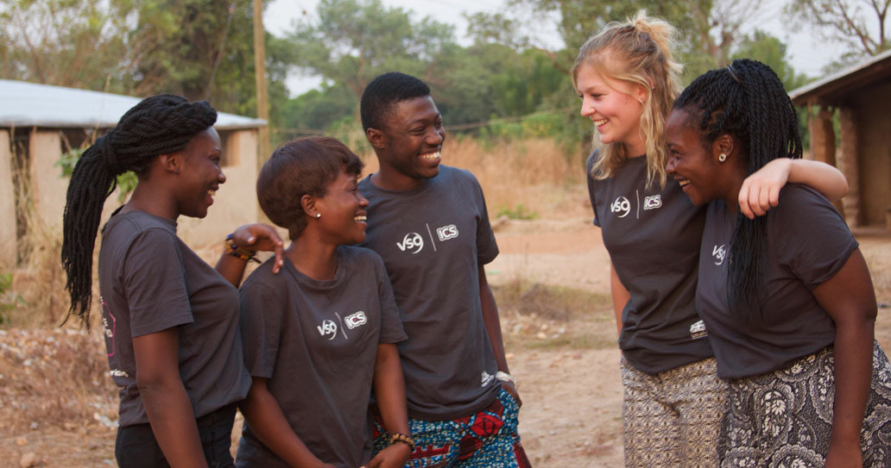

A bit about me.. The pictures above depict what I enjoy doing in my spare time. I am a sports enthusiast, I live and breathe football, whether i'm playing on a cold winters night or following my beloved Chelsea FC home and away. I also enjoy travelling, a few places I have been to as of recent include Paris, Barcelona and Madrid (my first solo trip away). I also like to explore and interact with other cultures. In 2017 I went to volunteer in Liberia for 3 months. I also enjoy coding and I have been developing myself through using online resources such as Codecademy and Khan Academy as well as YouTube being my best friend.